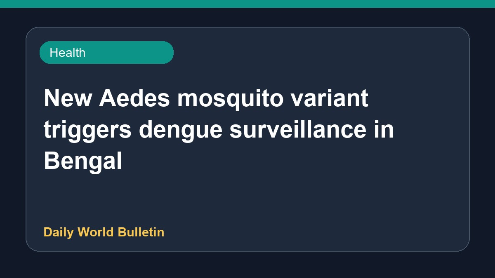

New Aedes mosquito variant triggers dengue surveillance in Bengal

Health authorities in West Bengal have stepped up surveillance efforts following the detection of a new Aedes mosquito variant. This development has prompted increased monitoring and preventive measures across the state to control potential dengue outbreaks. Officials are urging residents to remain vigilant and take necessary precautions against mosquito breeding. Further details regarding the specific characteristics of the new mosquito strain and affected zones are currently limited as health departments monitor the situation closely.
Original source: Health News Sources
New Aedes mosquito triggers Dengue surveillance in Bengal - MillenniumPost ↗
New Aedes mosquito triggers Dengue surveillance in Bengal - MillenniumPost ↗